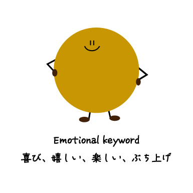
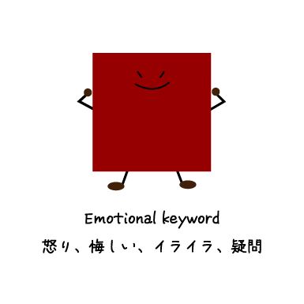
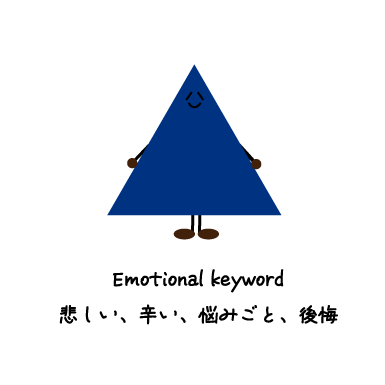
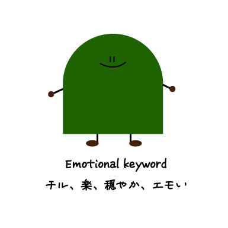

スマホで気軽に音楽を聴けるようになり、CDを買う機会が減ってしまったのではないでしょうか？
サブスクの発達により、聴きたい時にクリックすれば永遠に音楽を聴くことができる時代に変わったことから、
今のあなたの感情を選び、歌詞から自分の聞きたい楽曲に巡り合うことができるサイトを制作しました。
↑TOP




ここから感情ごとにまとめた楽曲を聴くことができます。
聞きたいプレイリストをクリック！↓